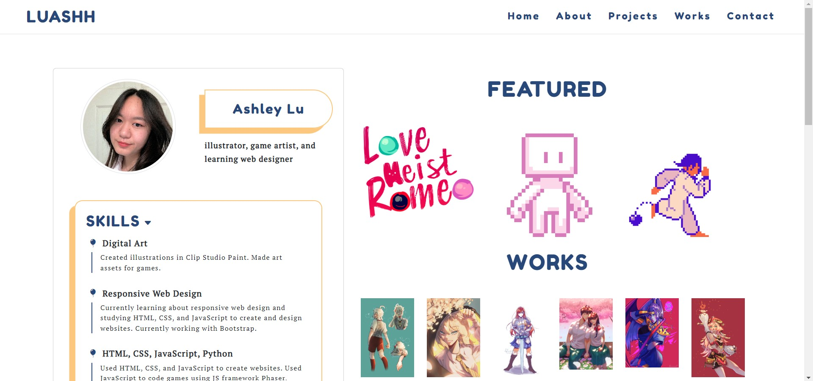
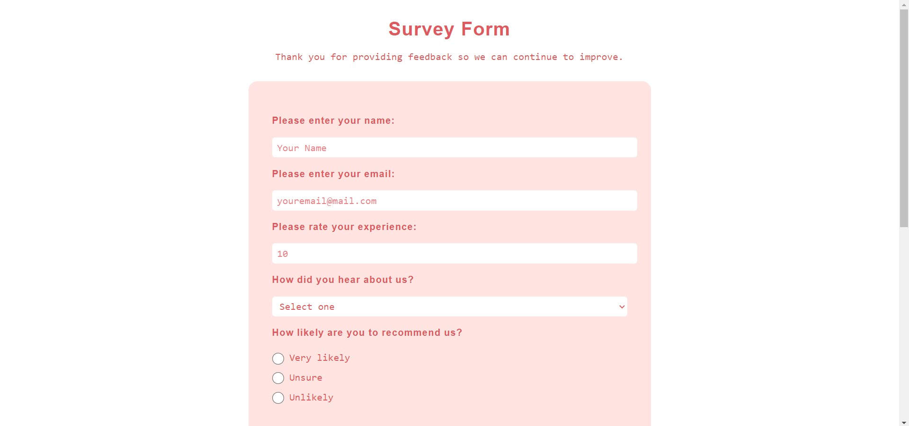
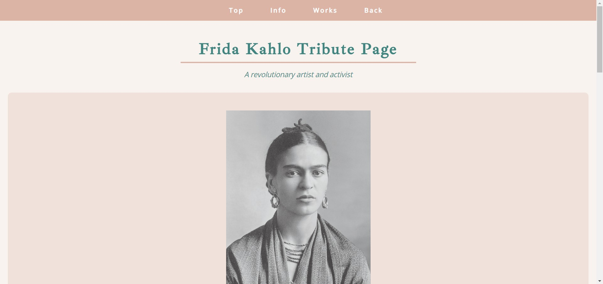
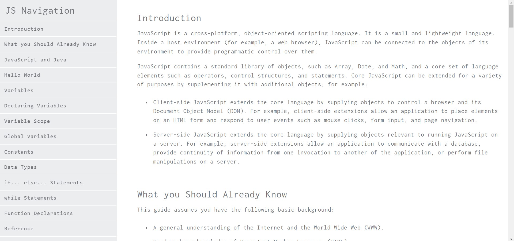

DIGITAL
Made with Clip Studio Paint and/or Adobe Photoshop.
Includes personal illustrations, fanart, school projects, and commissions.
WEB DESIGN
A list of small web design projects I made using HTML, CSS, and occasionally JavaScript.
-
Portfolio Site
It's the website you're currently on! I used HTML, CSS, JavaScript, and Bootstrap to help create this website. Still adding and editing this site.
 -
Mock Game Title Screen
A mock title screen for a game. I made almost all art assets (rolypoly asset is made by Sophie Martin) and programmed the parallax and animations for this title screen using Phaser 3 and JavsScript.

-
Survey Form
A minimalist survey form that has text inputs, radio options, checkbox options, and a selection input.
 -
Tribute Page
A tribute page for Frida Kahlo. I tried to keep it modern while also being reminiscent of other tribute pages that often use serif fonts and blocky layouts.

- Mock Documentation Page 
3D ART
Made with Blender.
Made with Maya.
The lootbox was a project to help get familiar with the 3D modeling pipeline. I first created concept art and then made low and high poly versions of the lootbox. Then I used both Photoshop and Substance Painter seperately to create textures. Finally, I brought it into Unity to stage it with lighting.
TRADITIONAL
Made with different mediums: acrylic, graphite, oil, watercolor, gouache.
DESIGNS
Made with Illustrator and/or Clip Studio Paint.
Designs include posters, logos, screens, and stickers.
CONCENTRATIONS
Airhead (2018)
This concentration focuses on my own internal struggles to break free of various restrictions, some of which are as listed: self-consciousness, guilt, negativity, and other fears. I tend to often hold myself back with excessive thoughts which act as a catalyst for my fears and prevent me from being comfortable in a foreign environment. The repeated balloon is a symbol of many meanings. To me, it's almost an embodiment of myself. It ties onto me, either chaining me down or carrying me away. It's empty with air, representing the meaningless thoughts and worries I have but are heavy enough to pull me back. It takes me to a far away place, separate from the problems and stress.​ Through this symbol, I depict a journey of achieving freedom from all of these restrictions.
The Feminist Revolution (2019)
This concentration centers around feminism. Oppressed groups such as women, people of color, and the LGBTQ+ community are still fighting for their equal rights. Race, gender, and sexuality should have no influence on equality of freedom. This concentration focuses on the empowerment of women specifically.